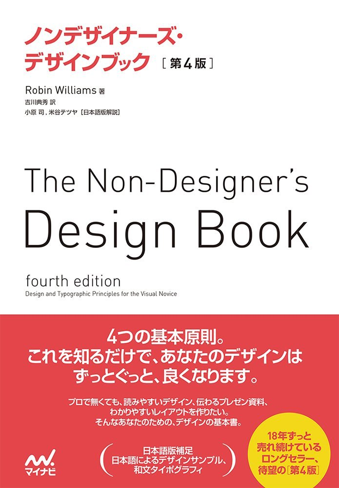

一般向け(その他)
このページでは、物理や数学に限らず、様々な本を紹介していきます。

ノンデザイナーズ・デザインブック Robin Williams著
大学生ともなればプレゼン資料を作る機会も増えてくるもの。「自分の資料が美しくないのはわかるんだが、この差はどこから生まれるんだろう。やっぱセンスだから仕方ない。あきらめよう」となってしまう前にこの一冊。デザインセンスは磨ける！たった4つのデザインの原則を理解して意識するだけでグッと見やすくて美しい資料ができるはず。全国民必携の一冊。
なるほどデザイン 筒井美希著
デザイナーがどのような思考で実際にデザインしているのかを紹介してくれている本。デザインについてうまく言語化・可視化されていて、タイトルの通り「なるほど」と何度も唸ってしまう。本書自体が様々なデザインを駆使して制作されているのが分かるので、読んでいてとても楽しいし勉強になる。
できる研究者のプレゼン術 スライドづくり、話の組み立て、話術 ジョナサン・シュワビッシュ著
意外と学ぶ機会のない『スライド作り』だからこそ、このような良書でしっかりと学ぶとあっという間に差がつく。1つ1つの内容がかなり具体的ですぐに使えるテクニックばかりが並んでいる。学会発表を控える学生は絶対に読むべき。